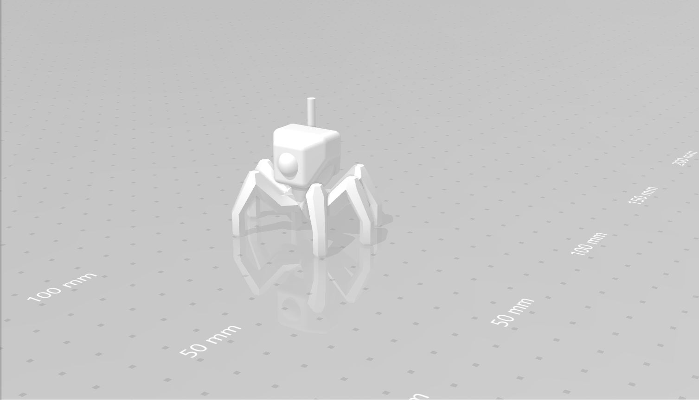
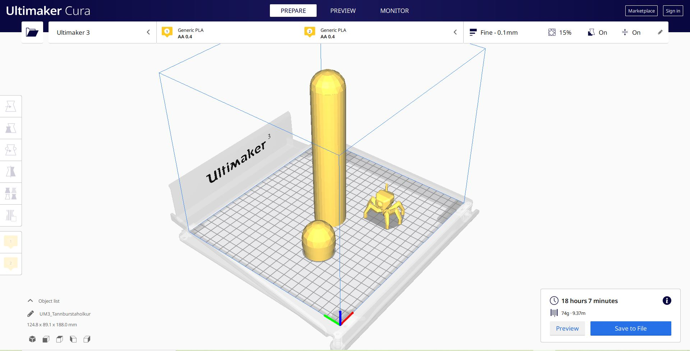
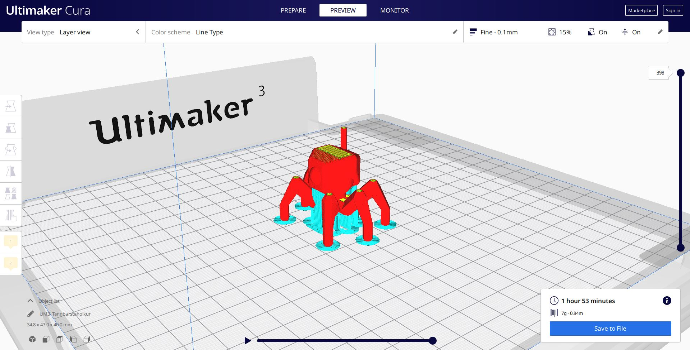
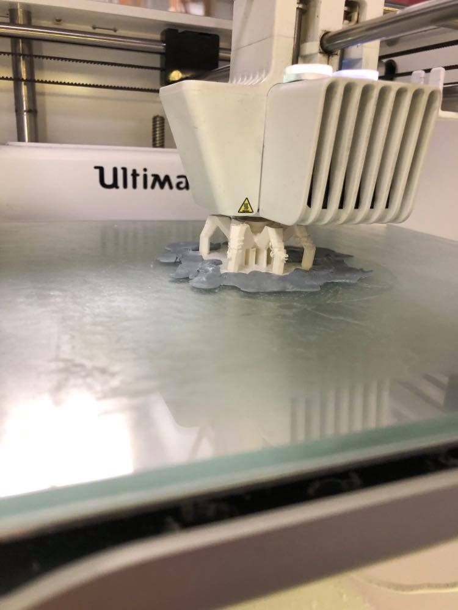
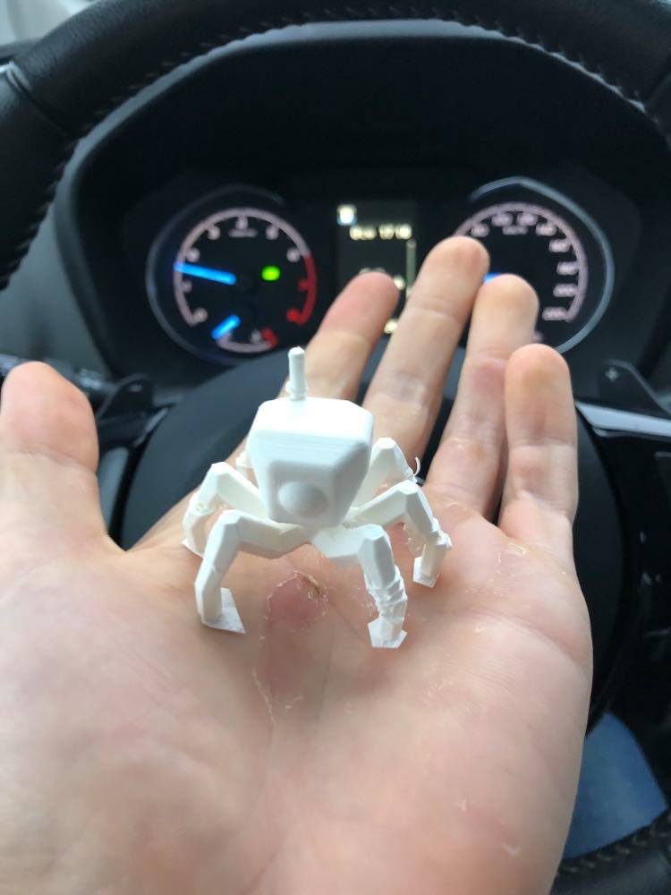
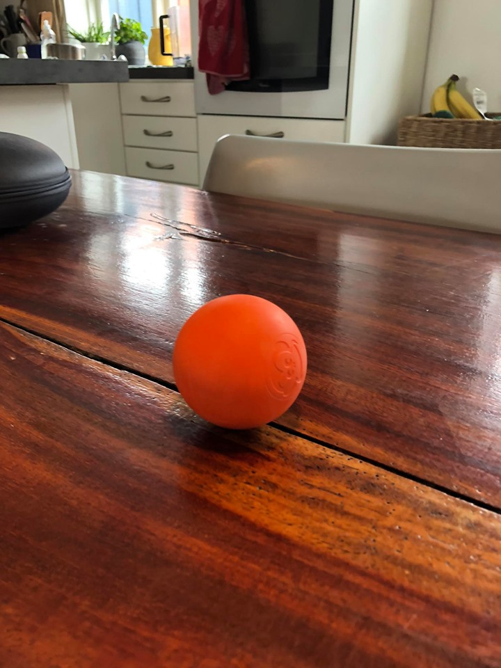
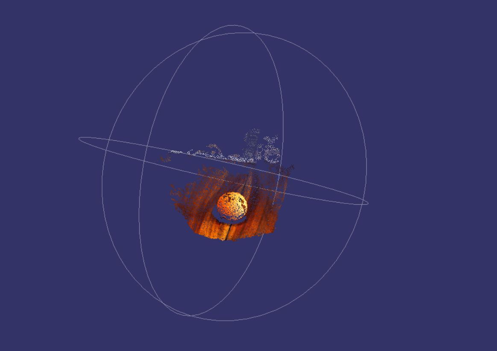
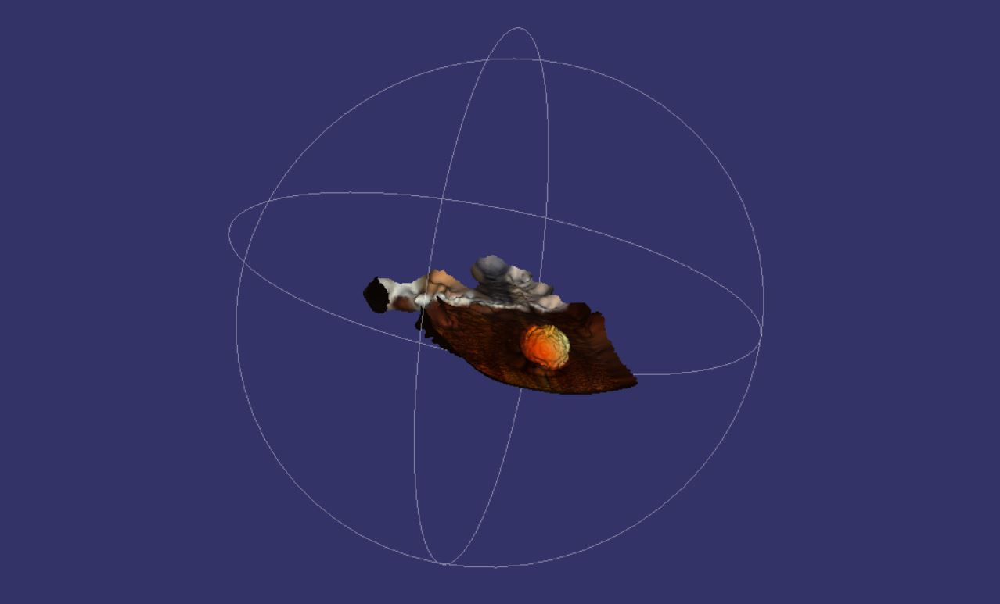
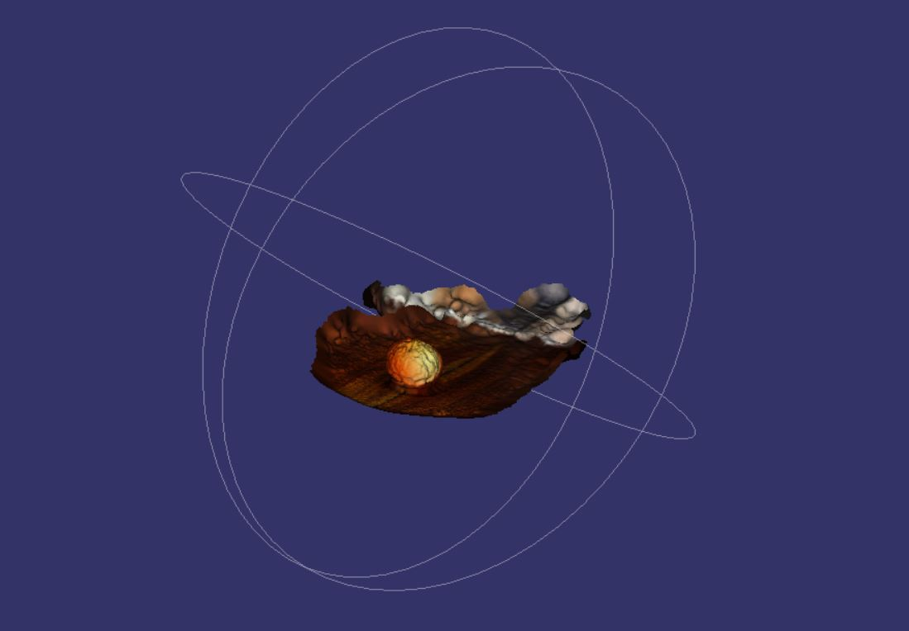

3D scanning and printing
For this assignment I decided to try to produce a tube for my toothbrush.
I sketched it up in Inventor with the dimensions my toothbrush would need and continued my search for ideas because a toothbrush tube was just a bit unexciting. There I found files of a sketch of a crab drone which I thought was cool so I downloaded the files and wanted to produce it with the printer.

I decided to try to print both the toothbrush tube and the crab drone so I prepared a print file in Ultimaker Cura with them both. When you click on Slice in Cura you get to see the print time. Turned out that my tube was too enormous for our limits. It would have taken 18 hours to print out both and we were told to limit our time to 4 hours.

Didn’t matter how I adjusted the settings or moved the parts around, it would have taken too much time. So I decided to throw out the tube and focus solely on the crab drone as that would only take around an hour and 40 minutes.

I adjusted the infill settings to 15%, the print speed to 90mm/s and the brim width to 3mm. The brim width is the size of the build plate, and 3mm is the setting that was set in the instructional video.
However, that was for an item that wouldn’t need it as much as my crab drone. When the printer was set into action it printed for around 30 minutes until I realized the build plates had shifted around. I had to abort the printing process because it would never work for such a small build to try to manually put it back in its place, and even though that was possible, it was probable that it would shift again.
So I opened Cura again and only changed the brim width. I changed it so that all the brims touched and were stuck together, that way reducing the possibility of the plates shifting.
Everything seemed to be too secure to fail, but then I discovered that the legs themselves were moving with the print needle, and it apparently didn’t matter how big the build plates were. I had to cut my losses as I was out of time and try to paste it down with some sticky tack. The legs were still moving with the print needle, just a bit less now. I had to just accept that it wasn’t going to be perfect. The end result came out like this.


Now it was time for the 3d scan component of the project. I didn't know which program to use, but after consulting
my friend Björgvin Theodór Hilmarsson, I decided to use Regard3d. I didn't want to make the scanning process too
complicated so I decided to scan a small orange massage ball.

For this scan I was told I needed around 70 pictures of the object from different angles and so that's what I did.
Then I uploaded them into Regard3d and clicked "compute matches". I think because it was such a simple object that
the process took a very short moment. Then you had to create a "dense pointcloud" and this is what you get:

Then what you have to do is create surface and you get a finished product out of the programme.


I was pretty happy with this end result, seeing as how I never thought this was possible so easily, creating a 3d object in a standard
computer with just a bunch of 2d pictures taken with your everyday cell phone.